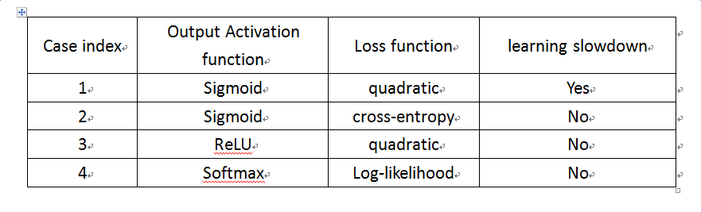
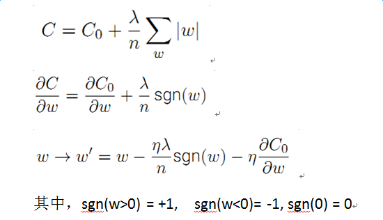
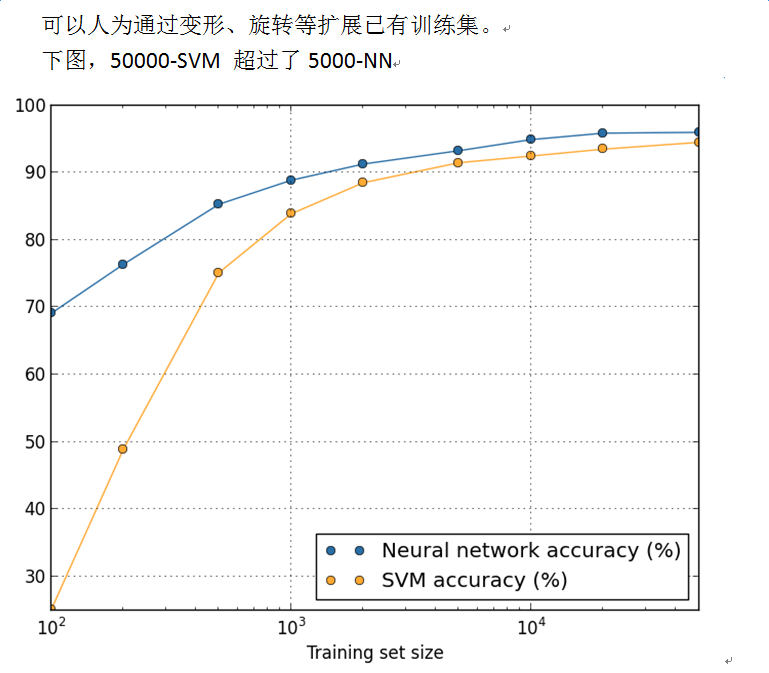
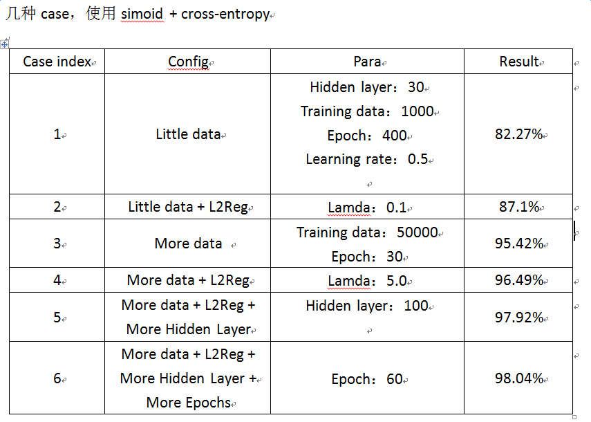
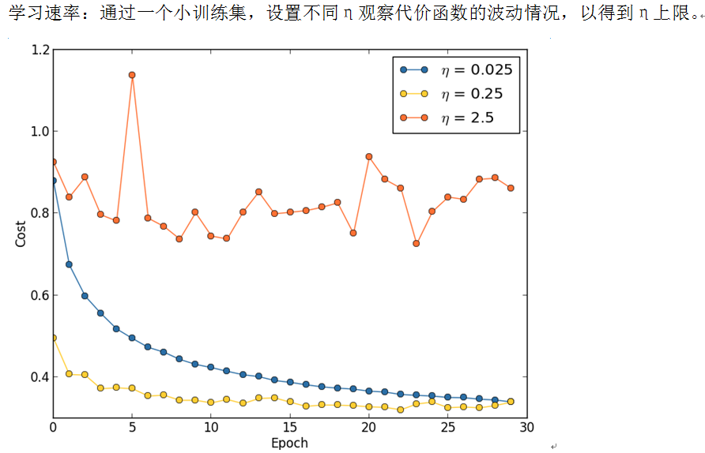

神经网络参数优化
1.学习缓慢问题
激活函数采用sigmoid，代价函数采用二次项时，会存在学习缓慢即梯度下降较慢的问题。对此，可以使用交叉熵代价函数，或者使用ReLU、Softmax激活函数等，如下图。

2.过拟合与正则化
防止overfit方法，提高准确度：
a、 增加训练样本数量，无法获取更多数据时可人工扩展已知训练集
b、 减小网络规模大小；
c、 正则化，L2、L1
d、 弃权：dropout
L2正则化

L1正则化
dropout
类似于多个网络，每次随机丢弃一半神经元，最终评估预测时，使用的权值除以2.more data
增加训练集样本数，可以有效改善算法性能。
效果评估

3.权重初始化

4.超参数设置
learning rate参数：

Epochs：可以使用验证集，比如10个Epoch准确率没有提升，就终止。从而获取合适的Eoch数目，称之为early stoping。
可变学习速率：初始时可采用较大学习速率，当验证集的准确性不再提升（如10 Epochs没提高），然后调整为逐步下降如1/10或1/2的较小学习速率，最终变为初始学习速率值的1/128、1/1024或1/1000等。
正则化参数：开始时关闭正则化，先获取合适的学习速率η。然后再调整规范化参数λ，可以先初始化为λ=1.0，再按照10的倍数进行调整，从而得到合适的λ。
mini_batch_size：与其它超参数相对独立，与网络结构无关，在快速运算与梯度更新速度之间折衷。太小则不能充分利用矩阵运算库的快捷，太大则梯度更新较慢。目标是最大化学习速度。可设置不同值，选择准确性最快提升的取值（可画图验证集准确度 vs. 时间）。
得到合适mini_batch_size后，再对其它超参数进行优化。
自动化技术：网格搜索grid search，可系统搜索超参数的网格空间。另有贝叶斯自动参数优化方法，可参考https://github.com/jaberg/hyperopt。
各参数通常有关系，要互相优化调试。